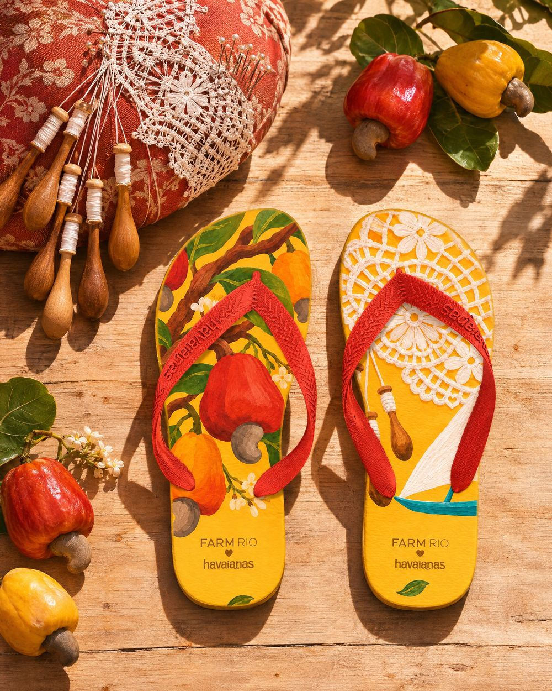

o processo
Como cada par nasce
Cinco passos, sempre na mesma ordem, do campo ao chinelo.
- 01
Campo
Fotos reais do lugar, com autor e licença, e o local de cada uma conferido antes de entrar.
- 02
Âncora
Um elemento que é daquele estado e de nenhum outro. Sem âncora, o chinelo fica só bonito.
- 03
Chinelo
Díptico: o pé esquerdo e o direito contam metades da mesma história. Só elementos.
- 04
Ilustração
O lugar inteiro, centralizado, feito com os mesmos elementos do chinelo.
- 05
O par
A tira repete uma cor da estampa e a assinatura da collab fica no calcanhar, sem mudança.
as regras da coleção
Uma cena para cada lugar

regra
Cada lugar, uma cena
Rio, mercado, duna, pampa, mata, janela, largo: cada estado tem uma cena própria, escolhida pelo que é dele e de nenhum outro.
regra
O coração é formado
Ele nunca é desenhado em cima de nada. É a franja da sombrinha, a cauda da baleia, duas folhas caindo juntas.
regra
A assinatura não muda
O logo da collab vai no calcanhar, centralizado, tom sobre tom. Quando passa por cima de um elemento, ganha só um fio fino na cor do fundo.
